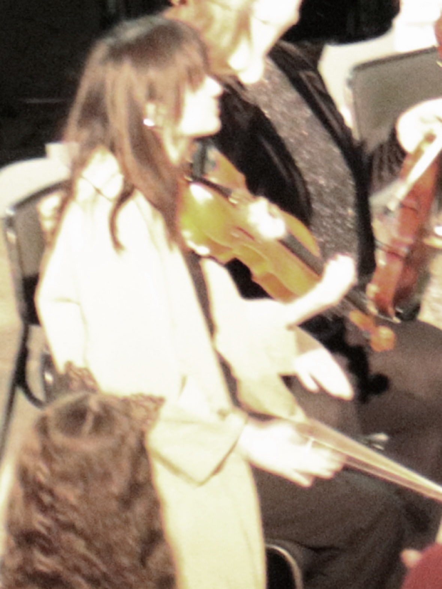

Album
MUSIC / LISTENING ROOM
音乐 / Listening Room
写在雨、低频和未被解决的时间里的歌。
Album
2026年4月17日
Orchid
HazezZ
2025年10月21日
春日和煦
HazezZ
2025年3月22日
He and Me
HazezZ
2025年2月1日
花园
HazezZ
2024年12月
Felix（音频待上传）
HazezZ
2024年12月21日
Affizieren
HazezZ
2024年8月29日
淤
HazezZ
2024年7月5日
Mr.Idiographic
HazezZ
2024年2月14日
箱庭
HazezZ
2023年11月11日
本格推理
HazezZ
2023年8月30日
Epilogue
HazezZ
2023年8月27日
恋に落ちてしまえない（音频待上传）
HazezZ
2023年8月23日
我恨你们所有人
HazezZ
2023年8月11日
Rainy days
HazezZ
2023年5月30日
小葉紫檀
HazezZ
2023年4月29日
柳
Armeria / HazezZ
2023年4月21日
夜顔
HazezZ
2023年2月24日
現人
HazezZ
2023年2月18日
Moonlapse (feat. 起子)
HazezZ
2022年12月
願う（音频待上传）
HazezZ
2022年夏天
写不下的海边小镇和你（音频待上传）
HazezZ
2022年8月30日
Ipomoea alba
HazezZ
2022年7月9日
Agny
湖323 / HazezZ
2022年5月20日
スパーノヴァ
HazezZ
2022年3月3日
孤星Prelude
HazezZ
2022年2月4日
Z（E）RO
HazezZ
2021年12月6日
フォーマルハウト/南鱼座α
HazezZ
2021年11月25日
罪
HazezZ / iine_p (薛天from灯诱）
2021年11月19日
水母与湖
HazezZ
2021年10月29日
夜明け、明暗の境目/凌晨、明暗交界处
HazezZ
2021年10月17日
心臓警報
HazezZ
2021年10月9日
影
HazezZ
2021年6月3日
未来に出会えたらいいな
HazezZ
2021年2月2日
分离性遗忘症
HazezZ
Background / Musicianship
音乐是我最早开始也是持续时间最长的创作表达方式。
我从小学习钢琴，建立了最初的听觉与和声基础，随后接触尤克里里，并在12岁开始学习小提琴。弦乐训练让我逐渐理解旋律线条与复调结构，也正是在14岁时我开始尝试基于系统学习的乐理进行原创作曲。随后我以 Distinction 完成了英皇乐理全部等级考试，这段训练也成为我后来持续写作与编曲的重要基础。
15岁起我开始独立进行自学编曲创作，将旋律发展为完整作品。16岁自学贝斯，开始深入理解低频结构与节奏骨架，17岁自学电吉他，使我能够从整体编制角度设计作品的声部关系与音色层次。
19岁开始自学混音与制作，逐渐从所谓写歌的人转变为能够完成完整音乐制作流程的创作者（即使有着许多不完美）。
在此过程中我也参与过多次合作项目：包括受邀参与专辑制作、为他人作品创作与录制贝斯声部等。对我而言音乐不仅是个人表达，也是与他人共同建构声音世界的过程。
我的个人创作往往围绕一些持续出现的意象展开。夏日的雨季、夜晚、潮湿空气中的光、以及白色夜开花植物。
这些元素逐渐构成了我作品中的情绪母题。关于时间的缓慢流动、在寂静中生长的张力、以及未言明的一切。

